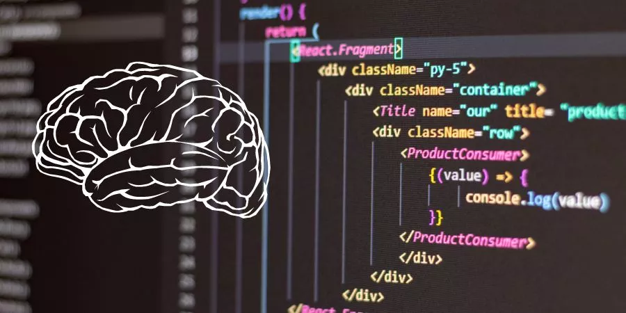

È importante nos mantermos atualizados,porque sempre há avanços na área da tecnologia.
O pensamento computacional ajuda o indivíduo a entender e planejar o que deve ser feito, ganhando então a habilidade de planejar algo e ter uma gestão maior da situação.
O pensamento computacional traz várias vantagens para as crianças e ajuda no desenvolvimento sociocognitivo do indivíduo. Esse conceito não apenas prepara os jovens para identificar informações, como também para produzir algo importante a partir desses conceitos e aplicá-los em seu cotidiano.
Além disso, contribui para a adaptação das aulas a um contexto social, no qual os indivíduos serão preparados para desenvolverem habilidades diversas que serão importantes nas exigências do mercado de trabalho.
IMPORTÂNCIA DO PENSAMENTO COMPUTACIONAL